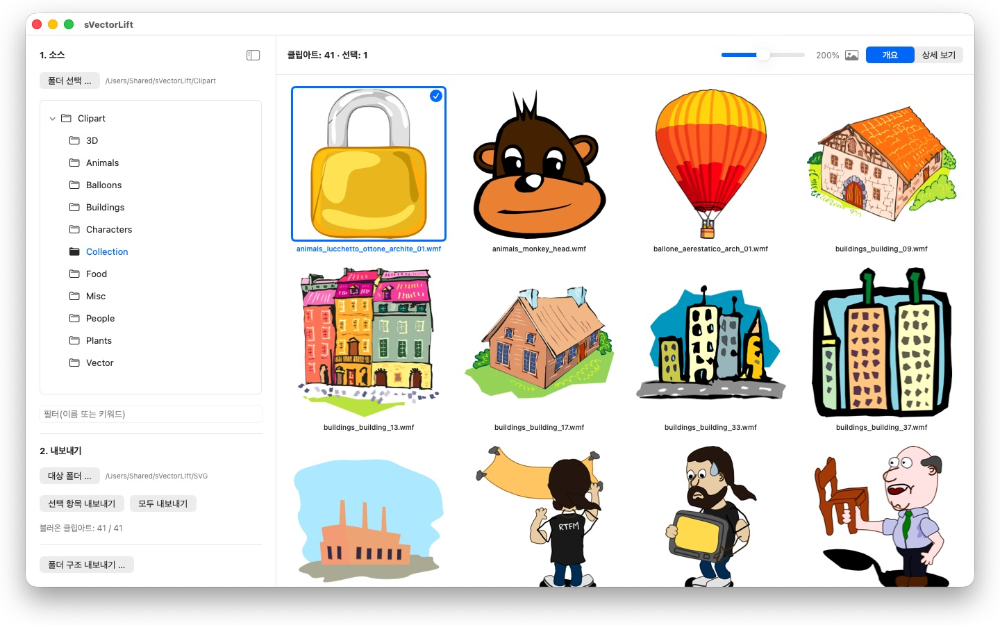
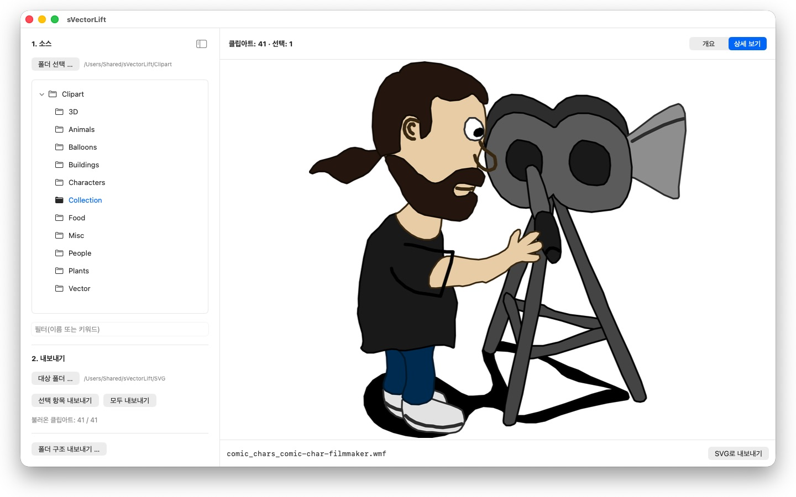

예전 CorelDRAW CD에 담긴 수천 개의 클립아트가 이제는 아무도 열지 못하는 파일 형식에 갇혀 있습니다. sVectorLift는 그것을 지금 쓸 수 있는 그래픽으로 되살립니다.




책장 어딘가에 몇 년 전 구입한 클립아트 CD가 놓여 있습니다. 파일은 그대로 남아 있지만, Mac의 어떤 프로그램도 그것을 열지 못합니다.
24개 언어: Deutsch · English · Español · Français · Italiano · Nederlands · Português · Svenska · Norsk · Suomi · Polski · Čeština · Hrvatski · Magyar · Română · Türkçe · Русский · Українська · فارسی · ไทย · 日本語 · 한국어 · 简体中文 · 繁體中文
sVectorLift는 그 그래픽을 다시 쓸모 있게 만듭니다. 각 그림을 진짜 SVG로 새로 구성합니다. 어떤 크기에서도 선명하고, 편집할 수 있으며, Illustrator, Affinity, Inkscape, Sketch, Figma에서 — 또는 웹사이트에서 바로 쓸 수 있습니다. 다시 볼 수 있게 되는 데서 그치지 않고, 다시 쓸 수 있게 됩니다. 이름에 담긴 ‘Lift’가 뜻하는 바가 그것입니다. 오래된 벡터 그래픽을 오늘의 도구 수준으로 끌어올린다는 뜻입니다.
열 수 있는 형식
- CorelDRAW 문서(.cdr), 버전 6부터 9까지
- Corel Binary Meta File(.cmx) — 다른 도구들이 읽기를 거부하는 예전 CDRX 방식까지
- Windows Metafile(.wmf)
- Computer Graphics Metafile(.cgm)
- QuickDraw 3D Metafile(.3dm, .3dmf) — 이미지로 렌더링
- Scalable Vector Graphics(.svg) — 그대로 표시
확장자가 .cdr인 파일 중 상당수는 사실 CorelDRAW 문서가 아니라 CMX입니다. 흔한 변환기들이 바로 여기서 실패합니다. sVectorLift는 둘 다 읽습니다.
sVectorLift는 클립아트 모음을 위한 앱입니다. 그림, 기호, 일러스트레이션이 대상입니다. 편집·조판 프로그램이 아니며, 여러 쪽짜리 브로슈어나 인쇄용 원고를 재현하려 하지 않습니다.
진짜 벡터 변환
미리보기 축소판을 찍어 내는 것이 아닙니다. sVectorLift는 그림 자체를 읽습니다. 패스와 베지에 곡선, 채우기 색, 그러데이션, 윤곽선과 파선 패턴, 패턴·텍스처 채우기, 삽입된 사진과 텍스트 객체까지 읽습니다. 결과물은 크기를 바꾸고 색을 바꾸고 편집할 수 있는 진짜 벡터 데이터이지, 그림을 찍은 사진이 아닙니다.
순수한 래스터 이미지는 대신 PNG로 내보내므로 잃는 것이 없습니다.
벡터 그래픽 대신 이미지가 필요한가요? ‘PNG로 내보내기’와 ‘JPG로 내보내기’는 SVG 파일을 포함한 모든 그림을 설정에서 지정한 크기의 이미지로 렌더링합니다.
모음 살펴보기
- 하위 폴더까지 포함한 전체 모음의 폴더 트리
- 선명한 벡터 미리보기 격자, 크기 슬라이더로 조절
- 상세 보기 — 화살표 키로 폴더를 넘기며 보기
- 이름 또는 키워드로 필터
- 사진 앱과 같은 다중 선택: 클릭, ⌘-클릭, ⇧-클릭, 드래그 선택, ⌘A
- Finder에서 파일 하나를 바로 열기(‘다음으로 열기’ 또는 이중 클릭)
- 최근 사용한 폴더가 멈춘 자리를 기억 — 하위 폴더와 선택한 파일까지
- 선택 항목 또는 폴더 전체를 한 번에 내보내기
- 하위 폴더를 포함한 폴더 구조 전체를 한 번에 변환 — 대상 폴더에 같은 구조가 그대로 유지됨
- 이름 변경, Finder에서 보기, 휴지통으로 이동
Mac에 빠르고 부담 없이
미리보기는 실제로 보고 있는 것만, 백그라운드에서 캐시와 함께 계산합니다. 큰 폴더도 수천 개의 파일을 몇 분씩 처리하며 멈추는 대신 곧바로 열립니다.
모든 것은 Mac 안에 머무릅니다. 네트워크 연결도, 계정도, 데이터 수집도 없습니다.
CorelDRAW는 Corel Corporation의 상표입니다. sVectorLift는 독립적인 앱이며 Corel과 제휴 관계에 있지 않고 Corel의 보증을 받지도 않았습니다.
- macOS 14 이상 필요
- 24개 언어 지원
- 지원: SwiftAppsBavaria@gmx.net
다른 앱
sCollectPlay
미디어 라이브러리를 위한 플레이어: 간단히 폴더, iTunes XML 또는 sCollect 미디어 라이브러리에서 음악, 영화, 오디오북, 팟캐스트를 재생합니다.
sCollectPlay Lite
sCollectPlay의 간결한 버전: 간단히 폴더, iTunes XML 또는 sCollect 미디어 라이브러리를 열어 음악, 영화, 오디오북, 팟캐스트를 재생합니다 — 재생 목록과 오디오 및 자막 트랙, 슬로 모션과 프레임 단위 이동을 지원합니다. 한 번에 하나의 소스만 열 수 있습니다. 열 브라우저, 사용자 재생 목록, 최근 사용한 소스 목록은 정식 버전에서만 사용할 수 있습니다.
sName2Date
파일 이름의 날짜를 촬영 일시로 사진, 동영상, 오디오 녹음에 기록합니다 — IMG_20240115_103000.jpg 같은 파일이 어떤 사진 관리 프로그램에서도 올바르게 정렬되도록 합니다.
sName2Date Lite
한 번에 파일 하나를 다루는 버전: 파일 이름의 날짜를 촬영 일시로 사진, 동영상 또는 오디오 녹음에 기록하고, 직접 설정하고, 이름을 ISO 형식으로 바꾸고, 모든 것을 ⌘Z로 되돌립니다 — sName2Date와 같은 기능이지만 폴더 전체는 다루지 않습니다.
SwiftRename
메모리 카드에서 보관함까지 — 사진과 비디오를 촬영 시각에 따라 이름 짓고, 연도·월·일별로 정리하며, 중복 항목도 찾아냅니다. RAW도 지원.
sBikeBridge
포털에 업로드하지 않고 자전거 라이딩을 분석합니다: 이 형식으로 기록하는 모든 사이클 컴퓨터의 FIT 파일과 GPX, TCX를 불러옵니다. 라이딩 기록은 Mac의 자체 라이브러리에 저장됩니다 — 지도, 파워, 심박수, 사진, 메모와 함께; 중복 항목은 가져오기 과정에서 인식됩니다. 연도별·월별 주요 지표와 거리, 상승 고도, 시간 필터로 라이딩을 비교할 수 있습니다. 원하면 지도를 오프라인으로도 사용할 수 있습니다.